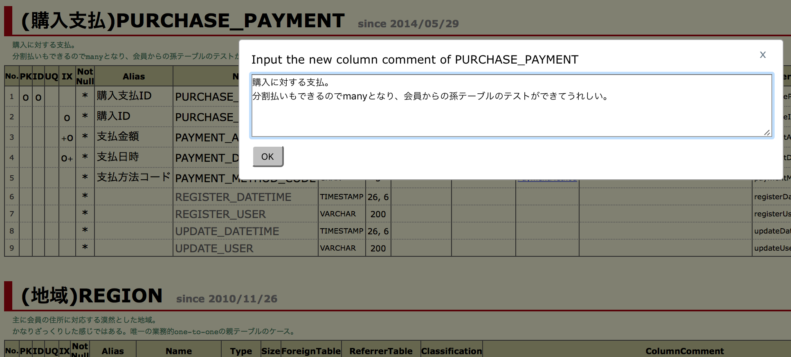
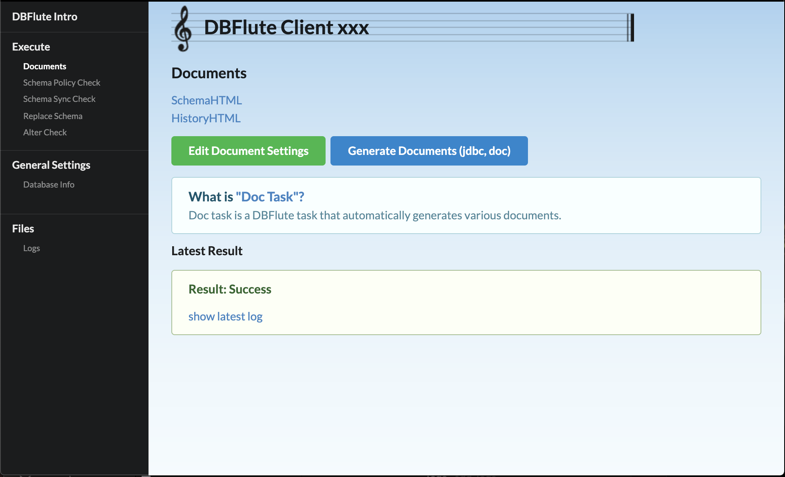
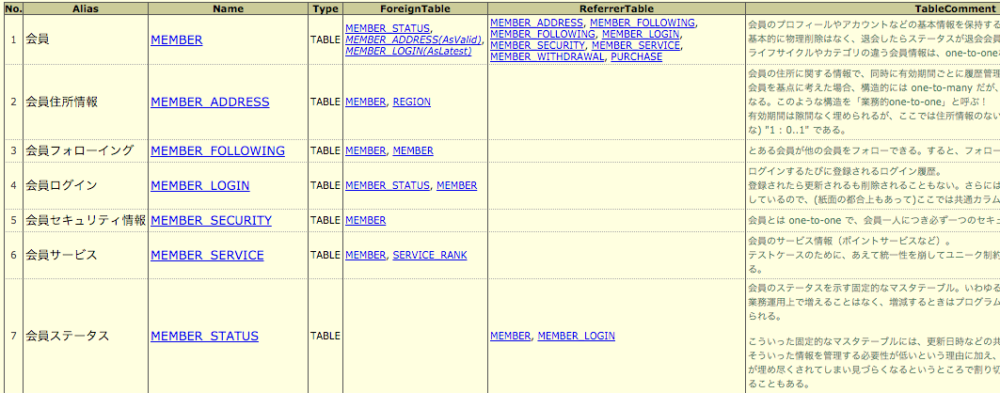
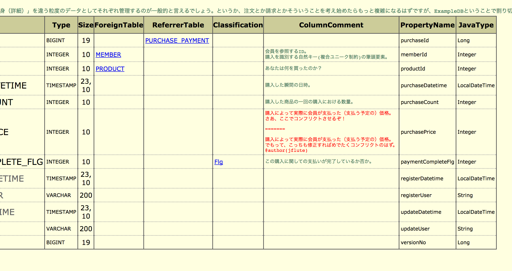
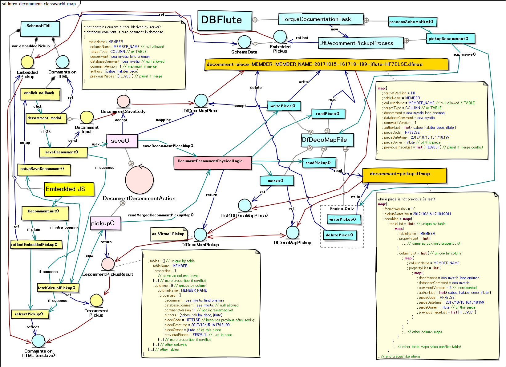

Decomment (でこめんと) on Intro
- Decommentとは？
- Decommentの使い方
- コンフリクトするとどうなる？
- デコメントはどう保存される？
- Decommentの環境構築
- コミッター向け情報
- 無言のデータベースほど寡黙なものはない
Decommentとは？
こんなシチュエーションで使います
- ディベロッパーが、SchemaHTML見ながらテーブルやカラムのことで悩んでる
- ディベロッパーが、わからないことを誰かに質問して知る
- ディベロッパーが、"ちゃんとDBコメント書いてあったらすぐわかったのに..." と思う
ズバリなに？
SchemaHTML上で "DBコメント" を追加・修正する、DBFlute Intro の機能 です。
複数人で追加・修正してもgitコンフリクトを起こさずマージできる のが特徴です。
SchemaHTMLでデコメント 
{kind=link}
えっ、なに？
ERDツール (ERFluteなど) を開かなくても、普段開発中にでよく見ている SchemaHTML で、各ディベロッパーが "こんなコメントがあったらもっと早くわかったのになぁ" と思った瞬間にDBコメントを記録することができます。
gitのブランチも、わざわざ専用のDB変更ブランチなどに切り替える必要はなく、 それぞれのディベロッパーのトピックブランチで作業できます。(同じテーブル、同じカラムのコメントを複数人で修正しても、gitコンフリクトは発生しません: 後述)
ERDツールじゃダメなの？
通常、DBコメントの追加は、ERDドリブンの開発であればDDLを出力するERDツール (ERFluteなど) から追加します。ただ、ERDツールはDBコメントの 気軽な 追加にはあまり向いていません。
- ERDの保存ファイルは一般的にマージはできない (専用のブランチに切り替える必要あり)
- そもそもERDツールの起動してからテーブルとカラムまで行くまでとても気軽ではない
Introはどう関係しているの？
DBFlute Introが、入力されたDBコメントを受け付ける中継サーバーとなって、DBFluteクライアント内に保存をします。 詳しくは、また後で。
- ディベロッパーが、DBFlute Intro経由で SchemaHTML を開く
- ディベロッパーが、SchemaHTML でテーブルやカラムのDBコメントを追加・修正する
Decommentの使い方
DBFlute Introを起動
manage.sh|bat の 88 (intro) を実行して、Introを起動しましょう。
SchemaHTMLを起動
Intro の Operate 画面の、Open the table ... リンクをクリックします。
Operate画面のドキュメントリンクあり 
{kind=link}
すると、SchemaHTMLが表示されます。
デコメントのダイアログ 
{kind=link}
そもそも、まだ SchemaHTML が存在しないのであれば、自動生成しましょう。
デコメントの登録
SchemaHTML上の任意のテーブルやカラムのコメント欄をクリックすると、ダイアログが開きます。
良い感じに修正してOKすると、デコメントが登録されます。
登録されたデコメントはファイルで保存され、gitでコミットすることで他の人に共有されます。
ただし、この時点では、Intro経由で SchemaHTML を開いたときだけデコメント (追加した分のコメント) が表示されます。 ブラウザで直接SchemaHTMLを開いても表示されるようになるのは、まだこのあと "Docタスク" 叩いた後です。
DocタスクでSchemaHTMLに固定化
ブラウザで直接SchemaHTMLを開いても表示されるようにするためには、Docタスク 叩きます。 多くの人が、SchemaHTMLを閲覧するときはブラウザで直接開くと想定されるので、これにて本当に皆が参照する共有コメントとなります。
ただ、チーム開発の場合、DocタスクはDB変更専用のブランチ (alter_dbブランチなど) で実行するような運用になっていると思いますので、わざわざデコメントのために Doc を叩くのではなく、自然の流れに任せる で良いかと思います。 コメントですので、気付いたら反映されているくらいでいいかと。
コンフリクトするとどうなる？
gitコンフリクトはせず業務的なコンフリクト
同じテーブル同じカラムのコメントを複数人で同時に修正しても、gitコンフリクトはしないように作られていますが、 (当然のことながら)業務的なコンフリクトは発生します。
SchemaHTML上でコンフリクトの表現
SchemaHTMLのコメント上で、コンフリクトが表現されます。
- コメント表示が "赤字" になる
- デリミタ "=======" つなぎで複数のコメントが連結表示される
デコメントのコンフリクト 
{kind=link}
コンフリクトの解消方法
クリックすれば、同じようにダイアログが開き、同じ要領でそのままコンフリクトしたコメントを修正することができます。 (自動マージは一切されず、必ず人間が目で見て修正する方式です)
デコメントはどう保存される？
DBFluteクライアントに保存される
DBFluteクライアントの schema/decomment にテキストファイルとして保存されます。
e.g. @Directory
[Project Root]
|-...
|
|-dbflute_maihamadb // client
| |-dfprop
| |-...
| |-schema
| | |-decomment // decomment resources
| | | |
| | | |-pickup // decomment pickup
| | | | |-decomment-pickup.dfmap
| | | |
| | | |-piece // decomment pieces
| | | | |-decomment-piece-MEMBER_SECURITY-20171229-173339-978-ryohei-339d5b82.dfmap
| | | | |-decomment-piece-PURCHASE-PURCHASE_PRICE-20171229-172847-616-jflute-6dd20e16.dfmap
| | | | |-...
| |-manage.bat
| |-manage.sh
|
|-...
デコメントごとにpieceファイルが保存される
一つ一つのデコメントを piece と呼んでいます。 (一回のOKボタンに付き、一ファイルが作成されます)
pieceファイルは、schema/decomment/piece 配下に保存されます。
e.g. @Directory
[Project Root]
|-...
|
|-dbflute_maihamadb // client
| |-dfprop
| |-...
| | |-decomment // decomment resources
| | | |
| | | |-pickup // decomment pickup
| | | | |-decomment-pickup.dfmap
| | | |
| | | |-piece // decomment pieces
| | | | |-decomment-piece-MEMBER_SECURITY-20171229-173339-978-ryohei-339d5b82.dfmap
| | | | |-decomment-piece-PURCHASE-PURCHASE_PRICE-20171229-172847-616-jflute-6dd20e16.dfmap
| | | | |-...
| |-manage.bat
| |-manage.sh
|
|-...
Docタスクでpickupファイルが作成・更新される
pieceたちを集荷した情報を pickup と呼んでいます。
pickupファイルは、Docタスクを叩くと schema/decomment/pickup 配下に保存されます。
e.g. @Directory
[Project Root]
|-...
|
|-dbflute_maihamadb // client
| |-dfprop
| |-...
| | |-decomment // decomment resources
| | | |
| | | |-pickup // decomment pickup
| | | | |-decomment-pickup.dfmap
| | | |
| | | |-piece // decomment pieces
| | | | |-// pieces are deleted
| |-manage.bat
| |-manage.sh
|
|-...
pickupには、pieceファイルたちの情報がすべて含まれています。 これらの情報は SchemaHTML にも反映されるので、ブラウザで直接 SchemaHTML を開いたときでも、登録されたデコメントたちが表示されるようになります。
一方で、集荷されたpieceファイルたちは不要になりますので削除されます。
Decommentのアーキテクチャマップ
DBFlute Intro と piece と pickup の関係などを表現したモデルがこちら。
{kind=link}
Decommentの環境構築
必要なDBFluteのバージョン
DBFlute と DBFlute Intro が以下のバージョン以降である必要があります。
- DBFlute
- 1.1.6 (2018/1/1リリース)
- DBFlute Intro
- 0.2.0 (2018/1/1リリース)
DBFluteが先にある場合
すでに DBFlute の環境が整っている場合は、DBFluteタスクの manage.sh|bat の 88 (intro) を実行すれば、プロジェクト直下に DBFlute Intro がダウンロードされ、自動的に起動します。
e.g. DBFlute Intro のjarファイルを dbflute-intro ディレクトリ配下に @Directory
[Project Root]
|-...
|
|-dbflute_maihamadb // client
| |-dfprop
| |-...
| |-manage.bat
| |-manage.sh
|
|-mydbflute
| |-dbflute-1.1.6 // engine
|
|-dbflute-intro.jar // downloaded by manage task
|-...
一度ダウンロードしておけば、ダウンロードは発生しないので、実行するだけのコマンドとして manage の 88 が利用できます。
DBFlute Introが先にある場合
DBFlute Intro の機能を使って、DBFluteをセットアップしましょう。
DBFlute Introのアップグレード
削除してダウンロードです。
- dbflute-intro.jar を削除
- manage.sh|bat の 88 (intro) を実行 (jarがなければダウンロードされる)
DBFlute Introはgitignoreする？
どちらでも構いません。ディベロッパーからすれば、manage を叩いて起動することには変わりはないので、どちらであっても利用してる分には意識しません。
Introのバージョンを強制させたい場合は、コミット対象にしておけば横展開が簡単にはあります。 ただ、それなりのサイズではあるので、やはりignoreにしてIntroのアップグレードは各自に任せるのも良いでしょう。 (LastaFluteのExampleでは、デフォルトでignoreになっています)
コミッター向け情報
Githubリポジトリ
- Github Page
- https://github.com/dbflute/dbflute-intro
- Pull Request Branch
- develop
Decommentのクラス概観マップ
図 : Decommentのクラス概観マップ 
{kind=link}
無言のデータベースほど寡黙なものはない
データベースは単なる構造で、武士のようなものです。
プログラムの世界は、"コメントを書こう" という習慣が(まあまあ)世界的に浸透しているように思えます。 でも、データベースの世界では "コメントを書こう" という意識があまり一般化していないように思えます。 ですが、テーブルやカラムこそコメントが欲しいと思う場面が多々あります。
月並みですが、データベースはアプリよりも一般的に長生きで、分析が非常にしづらいものです。 データを見ればある程度は予測付くこともありますが、テストデータでは情報量が少なく、本番データは容易に見れません。 データベースこそ技術的負債の温床と言えるでしょう。
ただ、DBコメントの追加はプログラム上のコメント追加に比べて、仕組み的に非常に面倒になりがちです。 なので、"DBコメントを入れよう" というキャンペーンを打ち出しても中々成立しません。
そこで、ディベロッパーのみんなが見ている SchemaHTML でそのままコメントが登録できたらいいのになぁと考えました。 ただ、壁は大きく二つ、HTMLから直接ローカルファイルにはアクセスできないことと、gitでコンフリクトしてしまうと元も子もないこと。 DBFlute Introを使うことでこれを乗り越えました。
まだまだ課題はありますが、Introのデコメント機能を使って、無言のデータベースが少なくなればいいなと夢見ています。